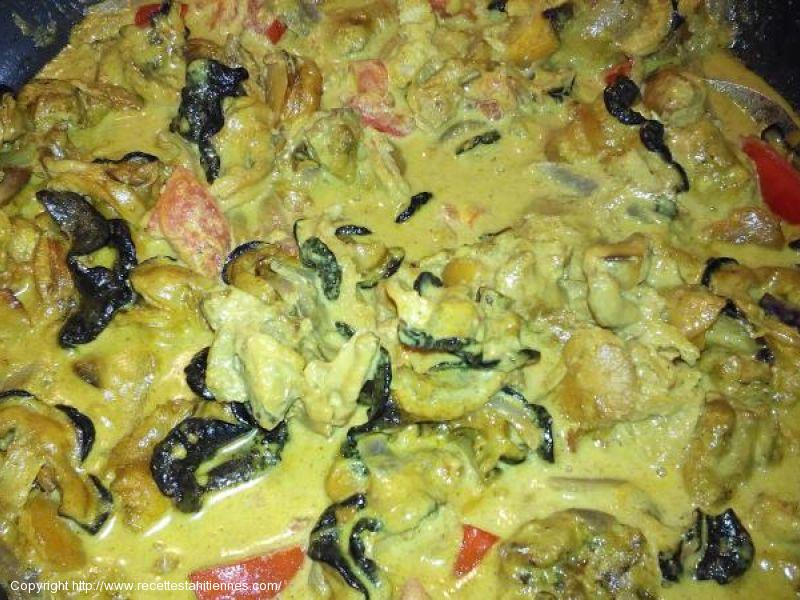

Rôle du site
Fonctionnement
Album photo
MA CUISINE CALEDONIENNNE
Ma recette du bougna marmite
Ma recette du Bami calédonien
Ma roussette sauce au vin
Crevette à l'ail et au lait de coco
Ma recette d'escargot de kunie
Ma recette de nem kanak
Ma recette de boulette javanaise
Ma recette de grisette du caillou
Ma recette de porc au sucre
Ma recette de gratin au squash
Ma recette de soupe au bénitier

Bred en salade et au lait de coco